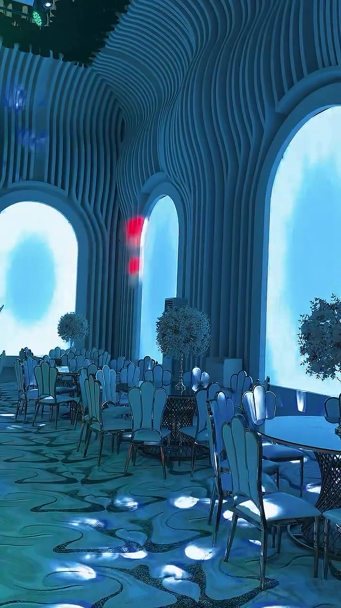
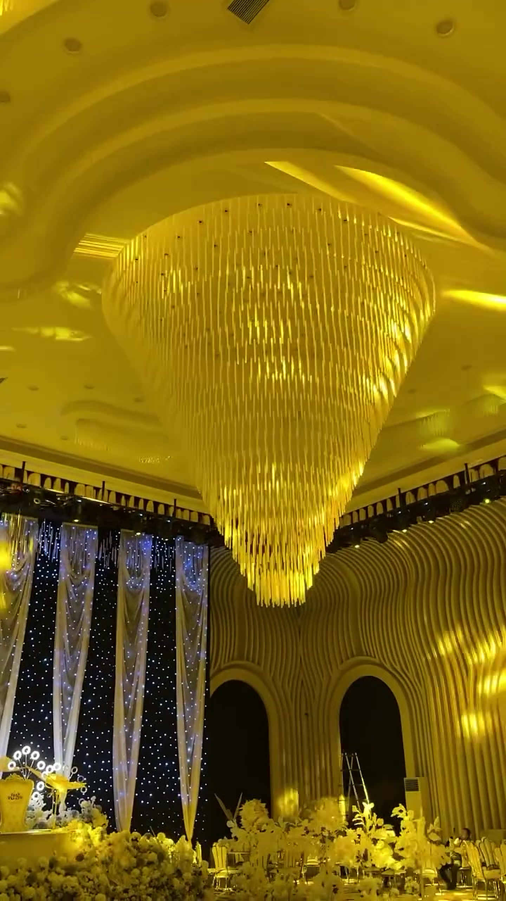
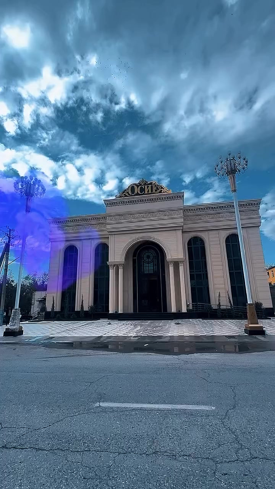
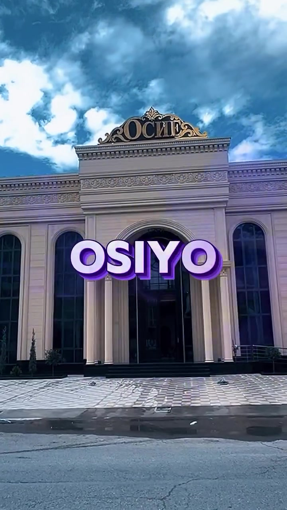
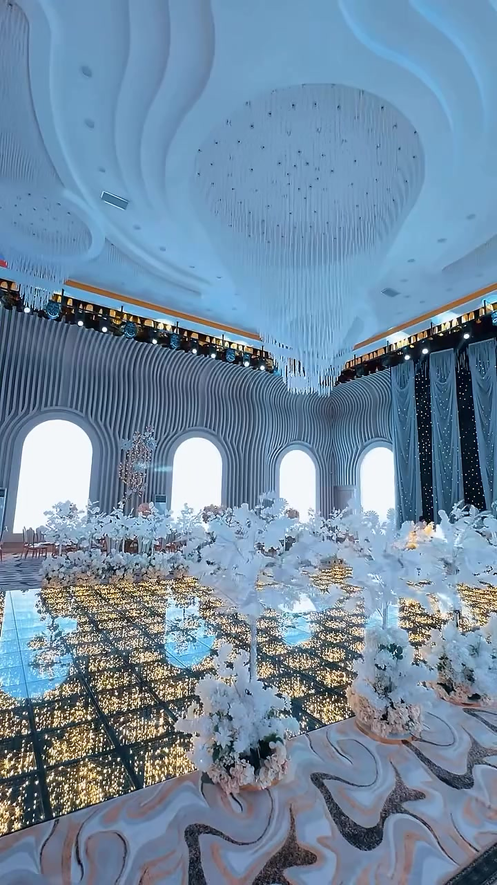
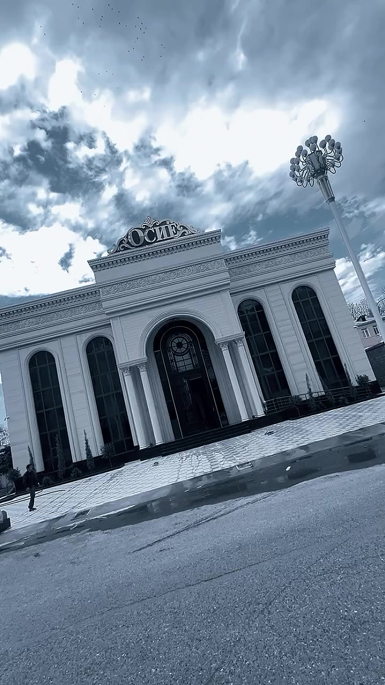
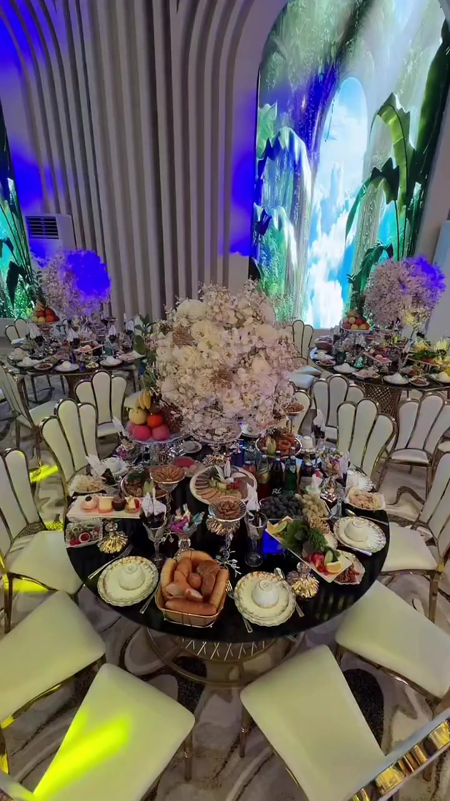
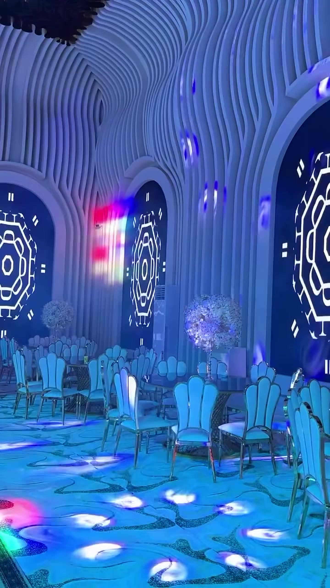

Свет и сцена
Динамическое освещение, люстры и сцена задают настроение вечера.
Дж. Расулов (Пролетарск) · Бронирование по телефону




OSIYO GRAND
Новый уровень роскошных свадеб. Грандиозный зал, свет и LED-пол — всё, что остаётся в памяти.
Листайте пальцем вверх и вниз — это весь сайт
Новый уровень роскошных свадеб
Красный зал и белый зал, парадный вход, сцена и столы. Смотрите настоящие кадры — без чужих фото.








1 / 10